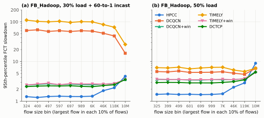
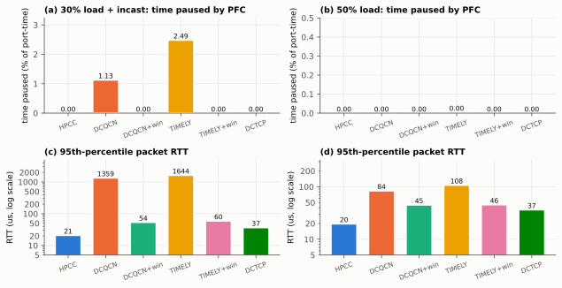
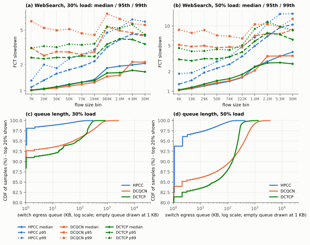
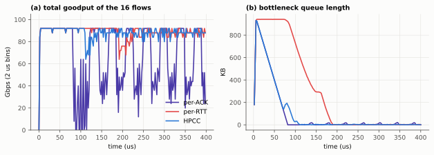
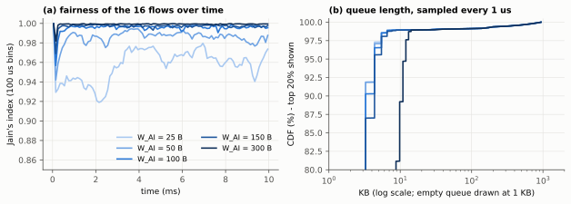
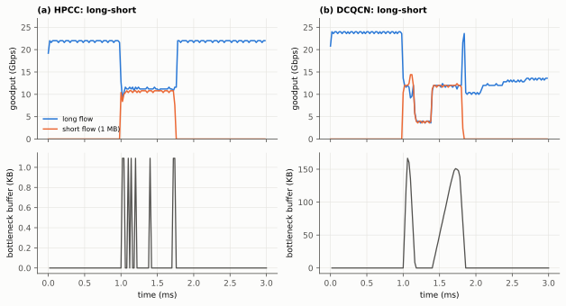
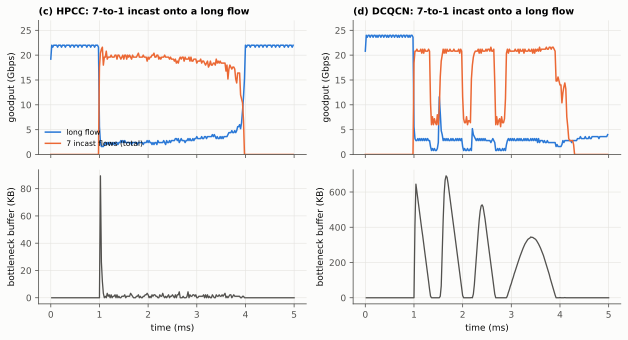
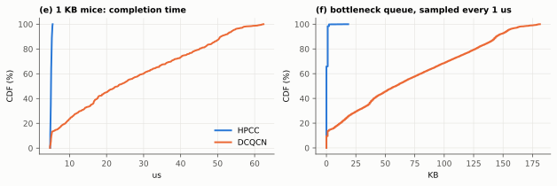
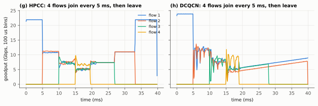

HPCC reproduction results
Independent re-implementation and simulation study of Li et al., "HPCC: High Precision Congestion Control", SIGCOMM 2019. This page was generated from the paper's 320-host FatTree (full set, make repro). Discussion: report.md; model and choices: DESIGN.md.
Contents: Figure 11 · Figure 10 · Figure 13 · Figure 14 · Figure 9 · seeds and sensitivity
Figure 11: FB_Hadoop on the FatTree

Paper
Figure 11a/c: for flows shorter than 120 KB (90% of FB_Hadoop flows) HPCC has a much lower 95th-percentile slowdown than DCQCN, TIMELY, their windowed variants and DCTCP, at 30% load + incast and at 50% load. Long flows are slower with HPCC (it leaves 5% headroom and pays INT bytes); the paper estimates 1.24x at 50% load.
This reproduction — matches
30% load + incast, 95th-percentile slowdown of all flows ≤ 120 KB: HPCC 1.85, DCQCN 102.25, DCQCN+win 3.68, TIMELY 134.79, TIMELY+win 3.77, DCTCP 3.01. 50% load, 95th-percentile slowdown of all flows ≤ 120 KB: HPCC 2.10, DCQCN 7.77, DCQCN+win 4.24, TIMELY 9.43, TIMELY+win 4.14, DCTCP 3.58. Largest-flow bin at 50% load: HPCC median 2.37 (0.99x the mean of DCQCN, DCQCN+win and DCTCP), 95th percentile 9.27 versus 5.48-8.26 for the others (1.44x their mean).
Matches: HPCC has the lowest 95th-percentile slowdown in every size bin up to 120 KB at 30% + incast and 50% load; plain DCQCN and TIMELY are worst, by far with incast; adding a window helps both; DCTCP sits between the windowed schemes and HPCC, as the paper explains (its window limits in-flight bytes); at 50% load HPCC is the slowest scheme for the largest flows.
Differs: The long-flow penalty at 50% load is 0.99x at the median and 1.44x at the 95th percentile, against the paper's analytical 1.24x. With maxStage = 0 (the default in the authors' run.py; the paper's text says 5) the 95th-percentile ratio is 1.08x, at the cost of slightly slower short flows (smallest bin 1.88 vs 1.76).
Why: With maxStage = 5 a long flow that starts on a busy link waits six RTTs between multiplicative increases and grows by only W_AI = 80 B per RTT meanwhile, so it reclaims bandwidth slowly. Absolute slowdowns also depend on the 5 ms measurement windows and the modelling choices in docs/DESIGN.md.
95th-percentile slowdown per bin (table view)
30% load + incast
| algorithm | <= 324 | <= 400 | <= 497 | <= 597 | <= 697 | <= 989 | <= 6,396 | <= 45,611 | <= 117,605 | <= 9,993,266 |
|---|---|---|---|---|---|---|---|---|---|---|
| HPCC | 1.63 | 1.65 | 1.66 | 1.69 | 1.62 | 1.60 | 1.61 | 1.97 | 2.32 | 4.44 |
| DCQCN | 111.97 | 109.82 | 109.49 | 108.31 | 104.19 | 108.53 | 107.27 | 87.61 | 73.70 | 33.55 |
| DCQCN+win | 3.75 | 3.96 | 3.91 | 3.69 | 3.91 | 3.78 | 3.57 | 3.44 | 3.46 | 4.07 |
| TIMELY | 149.49 | 139.74 | 142.64 | 143.53 | 136.75 | 138.18 | 140.61 | 118.23 | 99.03 | 45.25 |
| TIMELY+win | 3.71 | 4.08 | 4.03 | 3.72 | 3.87 | 3.93 | 3.69 | 3.42 | 3.50 | 4.33 |
| DCTCP | 3.02 | 3.09 | 3.06 | 2.98 | 3.04 | 3.04 | 3.04 | 2.91 | 2.96 | 3.85 |
50% load
| algorithm | <= 325 | <= 399 | <= 499 | <= 601 | <= 699 | <= 999 | <= 6,873 | <= 45,921 | <= 119,431 | <= 9,996,240 |
|---|---|---|---|---|---|---|---|---|---|---|
| HPCC | 1.76 | 1.79 | 1.78 | 1.78 | 1.78 | 1.74 | 1.77 | 2.37 | 2.95 | 9.27 |
| DCQCN | 8.16 | 8.27 | 8.22 | 7.98 | 7.91 | 7.95 | 8.10 | 6.98 | 6.23 | 6.84 |
| DCQCN+win | 4.29 | 4.29 | 4.33 | 4.35 | 4.24 | 4.24 | 4.23 | 4.09 | 4.14 | 5.76 |
| TIMELY | 10.25 | 9.92 | 10.16 | 9.69 | 9.82 | 10.04 | 10.17 | 8.00 | 7.25 | 8.26 |
| TIMELY+win | 4.21 | 4.27 | 4.18 | 4.22 | 4.18 | 4.24 | 4.05 | 3.93 | 4.01 | 5.94 |
| DCTCP | 3.56 | 3.64 | 3.59 | 3.56 | 3.49 | 3.52 | 3.50 | 3.54 | 3.73 | 5.48 |

Paper
Figure 11b/d: large-scale PFC pauses appear only with DCQCN and TIMELY; adding a sending window (DCQCN+win, TIMELY+win) reduces them to almost zero; HPCC's 95th-percentile latency is 19.8 us at 50% load (base RTT 12 us) and DCTCP's is more than 2x higher; DCQCN/TIMELY latency is around a millisecond with incast.
This reproduction — matches
HPCC's 95th-percentile RTT at 50% load is 21.6 us; DCTCP's is 41.7 us (1.93x) (with ACKs in a high-priority class HPCC's would be 19.8 us). PFC pause frames with incast: HPCC 0, DCQCN 30132, DCQCN+win 0, TIMELY 38280, TIMELY+win 20, DCTCP 0.
Matches: large PFC pauses appear only for the window-less rate-based schemes; with a window they all but disappear (at most 20 pause frames); DCQCN and TIMELY tail RTTs with incast are in the millisecond range, HPCC's stay near the base RTT.
Differs: HPCC's 95th-percentile RTT is 21.6 us rather than 19.8 us; DCTCP's tail RTT is 1.93x HPCC's, slightly short of 'more than 2 times'; the paused fraction of port-time is not comparable with the paper's bars because the paper does not define its denominator.
Why: The paper does not say exactly what its latency metric includes; here it is the per-packet RTT at the sender, which includes the ACK's wait in the reverse path's data queue. The pause fraction here averages over every host and switch port after warm-up.
| case | algorithm | paused % (all ports) | paused % (hosts) | pause frames | RTT p95 (us) | RTT p99 (us) | drops | measured flows | unfinished |
|---|---|---|---|---|---|---|---|---|---|
| 30%+incast | HPCC | 0.000 | 0.000 | 0 | 23.1 | 446.7 | 0 | 50421 | 0 |
| 30%+incast | DCQCN | 4.107 | 4.631 | 30132 | 2164.3 | 3221.2 | 0 | 50421 | 3 |
| 30%+incast | DCQCN+win | 0.000 | 0.000 | 0 | 94.4 | 392.2 | 0 | 50421 | 0 |
| 30%+incast | TIMELY | 4.564 | 4.500 | 38280 | 2264.9 | 3254.8 | 0 | 50421 | 19 |
| 30%+incast | TIMELY+win | 0.001 | 0.000 | 20 | 474.0 | 834.7 | 0 | 50421 | 0 |
| 30%+incast | DCTCP | 0.000 | 0.000 | 0 | 42.5 | 494.9 | 0 | 50421 | 0 |
| 50% | HPCC | 0.000 | 0.000 | 0 | 21.6 | 28.2 | 0 | 82662 | 4 |
| 50% | DCQCN | 0.000 | 0.000 | 0 | 115.9 | 173.0 | 0 | 82662 | 0 |
| 50% | DCQCN+win | 0.000 | 0.000 | 0 | 51.1 | 66.6 | 0 | 82662 | 0 |
| 50% | TIMELY | 0.012 | 0.012 | 361 | 138.4 | 398.5 | 0 | 82662 | 0 |
| 50% | TIMELY+win | 0.000 | 0.000 | 0 | 48.2 | 65.0 | 0 | 82662 | 0 |
| 50% | DCTCP | 0.000 | 0.000 | 0 | 41.7 | 54.0 | 0 | 82662 | 0 |
Figure 10: WebSearch, FCT percentiles and queue lengths

Paper
Figure 10 (testbed, 25G NICs): HPCC and DCQCN have similar median slowdowns but HPCC is much better at the 95th/99th percentile, especially for short flows: 99th-percentile slowdown for flows under 3 KB drops from 11.2 to 2.38 at 30% load and from 53.9 to 2.70 at 50% load. Median queue is 0 for both; at 50% load HPCC's 95th/99th-percentile queues are 19.7/22.9 KB versus 1.1/2.1 MB for DCQCN.
This reproduction — partly
At 30% load the 99th-percentile slowdown of flows under 3 KB is 1.44 (HPCC) vs 7.72 (DCQCN); for flows up to ~200 KB DCQCN's medians are at most 0% above HPCC's; 95th/99th-percentile queue 1.1 KB/15.5 KB vs 57.1 KB/532.5 KB. At 50% load the 99th-percentile slowdown of flows under 3 KB is 1.92 (HPCC) vs 15.45 (DCQCN); for flows up to ~200 KB DCQCN's medians are at most 22% above HPCC's; 95th/99th-percentile queue 2.3 KB/56.3 KB vs 432.1 KB/987.1 KB.
Matches: HPCC much better in the tail for short flows; queues near zero with HPCC and in the hundreds of KB to MB range for DCQCN; median queue 0 for both.
Differs: The DCQCN tail for tiny flows at 50% load (15.5) is less extreme than the testbed's 53.9; HPCC's 95th-percentile queue (2.3 KB) is below the testbed's 19.7 KB but its 99th (56.3 KB) is above 22.9 KB; at 50% load DCQCN's medians for flows up to ~200 KB are up to 22% higher than HPCC's, so 'similar medians' holds only roughly.
Why: This is a simulation of the paper's 100G FatTree, not the 25G testbed: the bandwidth-delay product is about 6x larger (162 KB), so line-rate starts of new flows collide in larger bursts (in BDP units HPCC's 99th percentile is lower than the testbed's); queue samples here include every switch port, most of them idle; and the testbed's DCQCN ran on real NICs.
| load | algorithm | p99 slowdown <3KB | flows <3KB | queue p50 | queue p95 | queue p99 | queue p99.9 | % samples non-empty |
|---|---|---|---|---|---|---|---|---|
| 30% | HPCC | 1.44 | 319 | 0.0 KB | 1.1 KB | 15.5 KB | 122.9 KB | 10.2 |
| 30% | DCQCN | 7.72 | 319 | 0.0 KB | 57.1 KB | 532.5 KB | 1.01 MB | 13.2 |
| 30% | DCTCP | 4.40 | 319 | 0.0 KB | 72.2 KB | 234.5 KB | 315.4 KB | 14.3 |
| 50% | HPCC | 1.92 | 525 | 0.0 KB | 2.3 KB | 56.3 KB | 145.4 KB | 27.2 |
| 50% | DCQCN | 15.45 | 525 | 0.0 KB | 432.1 KB | 987.1 KB | 1.88 MB | 29.7 |
| 50% | DCTCP | 5.02 | 525 | 0.0 KB | 223.2 KB | 305.2 KB | 626.7 KB | 30.6 |
Figure 13: per-ACK vs per-RTT vs HPCC reaction

Paper
Per-ACK reaction drains the queue quickly but overreacts: aggregate throughput drops to almost zero and then oscillates. Per-RTT reaction keeps the long queue for a long time. HPCC reacts fast without overreaction.
This reproduction — matches
HPCC drains the initial 932 KB queue by 108 us and keeps 87.9 Gbps of goodput; per-ACK drains at the same speed but its goodput falls as low as 0.0 Gbps and averages 63.1 Gbps; per-RTT needs until 190 us.
Matches: All three behaviours, including the near-zero throughput dips of per-ACK and the long plateau of per-RTT.
Differs: Exact timings differ slightly from the paper's plot (its T and W_AI for this experiment are not stated).
Why: Here T = 4.5 us (slightly above the 4.2 us base RTT) and W_AI follows the paper's default.
| variant | peak queue (KB) | queue < 10 KB at (us) | queue at 100 us (KB) | goodput 50-400 us (Gbps) | min 2-us goodput after 50 us |
|---|---|---|---|---|---|
| per-ACK | 932 | 82 | 0 | 63.1 | 0.0 |
| per-RTT | 942 | 190 | 729 | 88.5 | 64.0 |
| HPCC | 932 | 108 | 28 | 87.9 | 64.0 |
Figure 14: choosing W_AI

Paper
With 16 flows W_AI should not exceed 100 Gbps x 4 us x 5% / 16 = 150 B. All W_AI up to 150 B keep the 95th-percentile queue within 4 KB; 300 B gives 13 KB. A larger W_AI converges to fairness faster.
This reproduction — matches
95th-percentile queue by W_AI: 25 B: 4.4 KB, 50 B: 4.4 KB, 100 B: 4.4 KB, 150 B: 4.4 KB, 300 B: 12.0 KB.
Matches: The threshold behaviour: up to 150 B the 95th-percentile queue stays at a few KB, 300 B is several times higher; larger W_AI is fairer.
Differs: Values are close to but not identical with 4 KB / 13 KB.
Why: T = 4.5 us here vs the 4 us base RTT the paper quotes; INT and header sizes are this model's.
| W_AI | queue p95 (KB) | queue p99 (KB) | Jain, first 1 ms | Jain, last 2 ms | goodput, last 2 ms (Gbps) |
|---|---|---|---|---|---|
| 25 B | 4.4 | 28.3 | 0.952 | 0.962 | 86.4 |
| 50 B | 4.4 | 30.5 | 0.983 | 0.988 | 87.1 |
| 100 B | 4.4 | 29.4 | 0.995 | 0.999 | 88.3 |
| 150 B | 4.4 | 30.5 | 0.999 | 0.999 | 89.3 |
| 300 B | 12.0 | 36.0 | 1.000 | 1.000 | 89.0 |
Figure 9: testbed micro-benchmarks, re-run in simulation
The paper ran these on a 25G testbed; here they run on one simulated 25G switch with 1 us links. Fair-share steps are 5 ms instead of 1 s.

Paper
HPCC recovers the long flow's rate right after the short flow ends; DCQCN cannot recover to line rate even after 2 ms.
This reproduction — matches
After the short flow ends, the long flow is back at 95% of its earlier rate (sustained for 100 us) after 24 us with HPCC; with DCQCN it has not recovered by the end of the 3 ms run, and over the first millisecond it averages 52% of its earlier rate (HPCC: 99%). Peak buffer: HPCC 1.1 KB, DCQCN 167 KB.
Matches: Fast recovery with HPCC, slow (300 us timer driven) recovery with DCQCN.
Differs: -
Why: -

Paper
HPCC reacts after one round trip and the queue drains quickly; DCQCN's queue builds up to 550 KB.
This reproduction — matches
Peak buffer: HPCC 89 KB, DCQCN 692 KB.
Matches: HPCC's queue is drained within a few RTTs; DCQCN's queue is far larger and lasts longer.
Differs: Peak values depend on T, the number of senders' initial windows and DCQCN timers.
Why: The testbed used real NICs with their own start-up behaviour.

Paper
HPCC keeps a near-zero queue, so 1 KB mice see about the 5.4 us base RTT; DCQCN keeps a standing queue around its ECN threshold and mice latency is consistently above 35 us.
This reproduction — partly
Median mouse completion time: HPCC 5.0 us, DCQCN 23.2 us; median queue 0.0 KB vs 59 KB.
Matches: Mice at the base RTT with HPCC and an empty median queue; much higher and more variable latency with DCQCN.
Differs: DCQCN's median mouse latency (23 us) is below the paper's 'consistently higher than 35 us': its queue saw-tooths between 0 and ~180 KB instead of sitting at the 100 KB marking threshold.
Why: The timer-only vendor DCQCN model used here (from the authors' simulator) is not the testbed NIC firmware; the base RTT here is ~4.9 us, not 5.4 us.

Paper
HPCC provides good fairness even on short time scales.
This reproduction — matches
Jain's index while all four flows run: HPCC 0.994, DCQCN 0.984.
Matches: Both share fairly on average; HPCC converges smoothly.
Differs: Time scale is compressed 200x (5 ms steps).
Why: Simulation cost.
Seed variation and sensitivity
Extra FB_Hadoop 50% runs with other seeds, and HPCC with maxStage = 0 (the default in the authors' run.py) instead of the paper's 5.
| run | p95 smallest bin | p95 middle bin | p95 largest bin | p50 largest bin | RTT p95 (us) | pause frames |
|---|---|---|---|---|---|---|
| seed2-fb50-dcqcn | 8.00 | 8.14 | 6.67 | 2.44 | 110.6 | 0 |
| seed2-fb50-hpcc | 1.81 | 1.81 | 9.32 | 2.37 | 21.6 | 0 |
| seed3-fb50-dcqcn | 8.77 | 8.56 | 6.99 | 2.50 | 114.3 | 0 |
| seed3-fb50-hpcc | 1.85 | 1.81 | 10.02 | 2.45 | 21.6 | 0 |
| sens-fb50-dcqcn-ackhigh | 5.58 | 5.37 | 6.73 | 2.21 | 84.4 | 0 |
| sens-fb50-hpcc-ackhigh | 1.49 | 1.48 | 9.04 | 2.35 | 19.8 | 0 |
| sens-fb50-hpcc-maxstage0 | 1.88 | 1.86 | 6.97 | 2.43 | 22.9 | 0 |